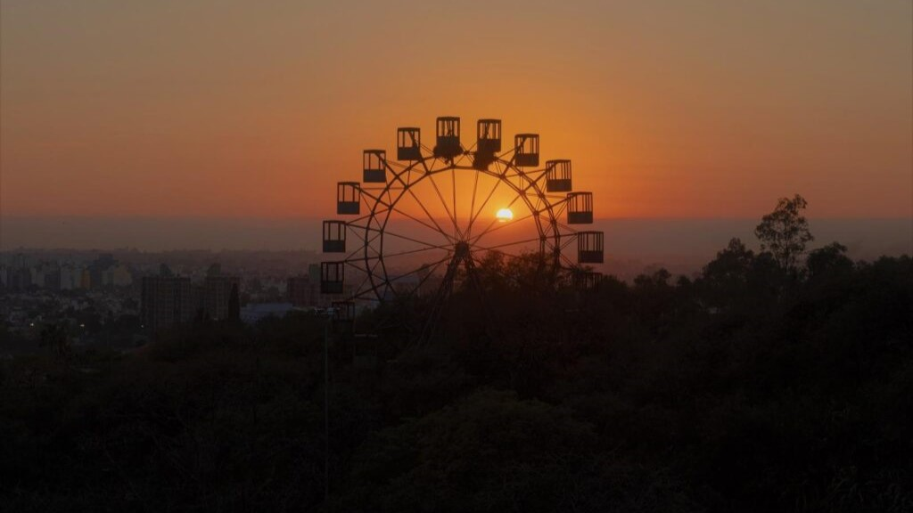
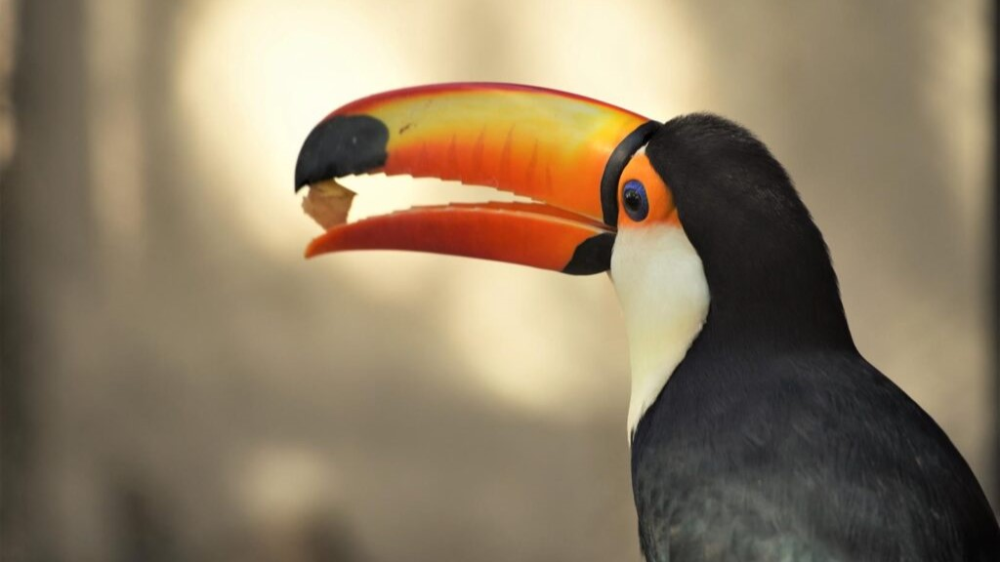

El Parque de la Biodiversidad es una gran alternativa para escapar de las altas temperaturas del verano en la ciudad.
Desde su apertura, en mayo de 2023, el parque recibió más de 1.452.000 visitantes.

Cuenta con senderos parquizados, zonas patrimoniales recuperadas, coloridos murales, patio para las infancias, distintas vistas y espacios para la observación de animales y aves.
Es una excelente opción para visitar durante las vacaciones de verano. Quienes deseen recorrerlo pueden hacerlo de manera libre o a través de visitas guiadas con previa inscripción.

La Municipalidad de Córdoba dispuso uno de los mayores cambios ambientales de la ciudad al transformar el antiguo zoológico en un espacio dedicado a la conservación, protección y bienestar animal.
A pocos días del verano, el parque se transforma en una de las alternativas más elegidas por turistas y vecinos.
¿Qué se puede hacer en el parque?
Dentro del recorrido los visitantes pueden pasar un grato momento recorriendo su lago histórico, caminando entre senderos recuperados y disfrutando de espacios verdes.
También es posible contemplar la fauna provincial recuperada, participar de actividades educativas y visitar sectores dedicados a la preservación de especies.
Durante el paseo, niños y adultos pueden disfrutar de miradores, áreas recreativas y recorridos especialmente diseñados para conocer la biodiversidad de Córdoba.